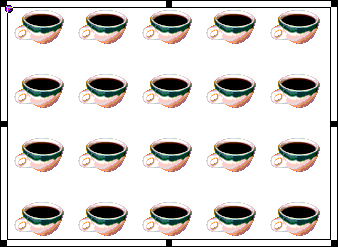

Using Director > Vector Shapes and Bitmaps > Creating a custom tile
Using Director > Vector Shapes and Bitmaps > Creating a custom tile |
Creating a custom tile
Custom tiles provide an effective way of filling a large area with interesting content without using a lot of memory or increasing the downloading time. They are especially useful for large movies on the Web. A custom tile uses the same amount of memory no matter what size area it fills.

To create a custom tile:
1 |
Create a bitmap cast member to use as a tile and display it in the Paint window. |
2 |
Click the pattern box in the Paint window and choose Tile Setting from the bottom of the Patterns pop-up menu. |
3 |
Click an existing tile position to edit. |
The existing tiles appear next to the Edit label. You have to replace one of the built-in tiles to create a new one. To restore the built-in tile for any tile position, select it and click Built-in. |
|
4 |
Click Cast Member. |
The cast member appears in the box at the lower left. The box at the right shows how the image appears when it is tiled. The dotted rectangle inside the cast member image shows the area of the tile. |
|
To choose a different cast member for the tile, use the arrow buttons to the right of the Cast Member button to move through the movie's cast members. |
|
5 |
Drag the dotted rectangle to the area of the cast member you want tiled. |
6 |
Use the Width and Height controls to specify the size of the tile. |
The new tile appears in the tile position you selected. You can use it in the Paint window or from the Tool palette to fill shapes.